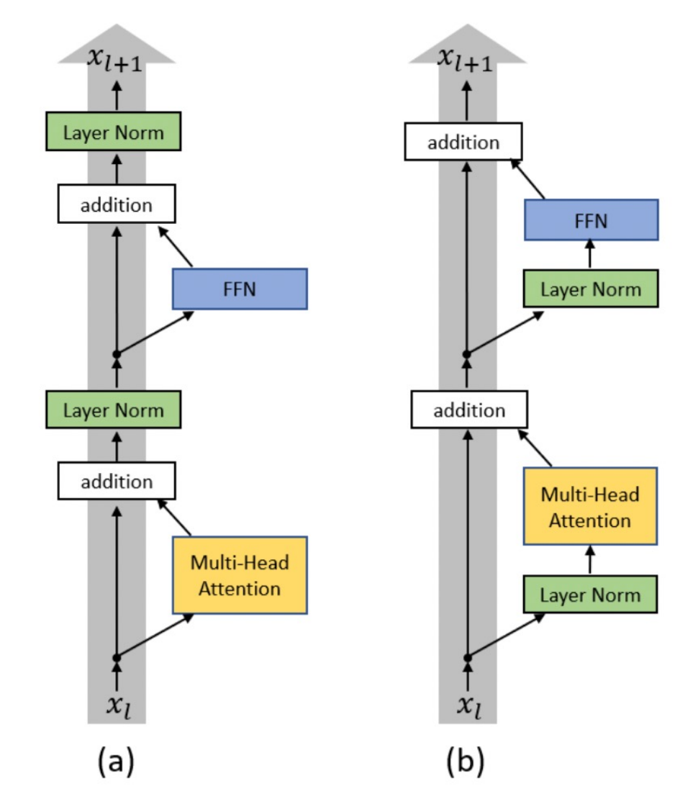
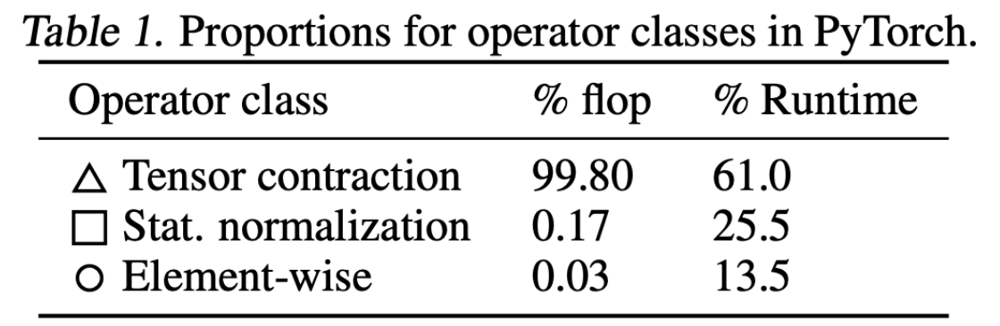

Normalization changes what information a hidden vector preserves and how a gradient reaches earlier layers. This reading develops those two questions, then asks why an operation with very few FLOPs can still matter for runtime.
- Scope
- Slides 1–13, ending with the first “Why RMSNorm?” slide. Session 13 stopped here. Slides 14–50, including the empirical RMSNorm results, FFNs, block layout, embedding tying, and architecture dimensions, continue in Handout #14.
- Time
- 5–7 minutes for the warm-up, then 30–40 minutes for §1–§2 and §4; 15–20 more for the optional lab and code reading in §3.
- By the end
- Identify topology information boundaries; explain the residual identity path; distinguish centering from scale control; normalize the correct axis; reason about FLOPs versus elapsed time.
- Assumes
- Handout #11 and #12. Activations have shape $[B,T,D]$; normalization is over the last axis. $F$ denotes the hidden width of an FFN when comparing matrix and vector parameter counts.
Slide-to-reading map
| Slides | Reading |
|---|---|
| 1–5 | §1: topology and separate architecture choices |
| 6–11 | §2.1: normalization placement and residual paths |
| 12 | §2.2–§2.3: LN/RMSNorm statistics, invariances, and implementation |
| 13 | §2.4: why FLOP share is not runtime share |
The broader architecture roadmap on slide 5 introduces topics developed in later sessions; it does not make those topics part of session 13’s assigned reading.
Warm-up: three questions in 5–7 minutes
Try these before reading §1. Write a one-sentence reason or a small calculation for each; then reveal the answers. These are preparation questions, not a graded quiz. Revisit an uncertain answer after the linked section.
Counterexample adaptation of Spring 2024 Quiz 1 Q1.18, pp. 4–5.
A normalized feature vector is $z=[1,-1]$: its mean is 0 and its population variance is 1. A readout computes $y=100z_1+0z_2$. Does normalization force both coordinates to contribute equally to this readout? State $y$ and identify the directly used coordinate.
Reveal the answer
$y=100$. The readout directly uses only the first coordinate. Normalization can control scale without forcing learned coefficients or predictive influence to be equal. This counterexample qualifies the source answer’s overstatement about equal contributions; it does not say normalization is useless. §2.2 separates normalized statistics from learned gains and downstream use.
Original puzzle; review of means and variance before §2.2.
Center each vector by its own mean, then divide by its population standard deviation: $a=[1,3]$ and $b=[101,103]$. Ignore epsilon and learned affine parameters. Do the normalized results differ? Can their normalized values alone tell you which original mean was used?
Reveal the answer
The means are 2 and 102; both standard deviations are 1. Both normalized vectors are [−1, 1]. Their common-offset information has been removed, so the normalized values alone cannot recover the original mean. This prepares the common-shift comparison between LN and RMSNorm in §2.2.
Numerical extension of Spring 2025 Quiz 2 Q1.17, p. 4. Here arithmetic intensity is FLOPs per byte transferred from global device memory.
Operation A performs 100 FLOPs and transfers 100 bytes. Operation B performs 100 FLOPs and transfers 10 bytes. Compute their arithmetic intensities. Why might B be faster, and why do these two ratios not determine elapsed time?
Reveal the answer
A has 1 FLOP/byte; B has 10 FLOPs/byte. B transfers less data for the same arithmetic and may benefit when memory bandwidth limits execution. Actual runtime also depends on achieved bandwidth, compute throughput, kernel/launch overhead, shapes, and dtype. Arithmetic intensity describes a workload; it is not a stopwatch measurement. §2.4 applies this distinction to normalization.
1Read an architecture as a set of choices
Start by separating the information boundary from the computation inside it. A decoder's causal attention defines what each prediction can read. LayerNorm versus RMSNorm changes how each token’s features are normalized. With the correct feature axis, this does not let a query read future tokens. Keep topology, normalization placement, and normalization statistics as separate choices.
| Question | What to inspect | What it does not establish |
|---|---|---|
| Can position $i$ read $i+1$? | Attention masks in every layer | The activation name does not establish causality. |
| Which features interact? | Normalization axis and FFN matrix shapes | A token-wise FFN does not directly mix sequence positions. |
For the topology recap, identify which sequence each query reads. An encoder represents an observed sequence with bidirectional self-attention. A decoder uses causal self-attention to generate a sequence. An encoder–decoder combines a bidirectional source encoder, a causal target decoder, and target-to-source cross-attention. “Bidirectional source” does not mean the decoder may read future target tokens.
Extends Spring 2025 Quiz 2 Q4.1, pp. 6–7.
Match BERT, T5, and GPT to the three topologies. For each, name an information source available to a query. Why would an encoder-style representation of the complete target sentence leak information in next-token training?
Reveal the answer
BERT is encoder-only: a query can read both earlier and later positions in its supplied input. T5 is encoder–decoder: a target query can read its target prefix and the encoded source. GPT is decoder-only: a query reads its input prefix. Encoding a complete target sequence bidirectionally can expose the very next token being predicted. The topology names describe attention structure; they do not alone specify the loss, corruption scheme, or downstream task.
A causal decoder uses RMSNorm, but a programmer computes the RMS across both time and features. Can the model still leak future information?
Reveal the answer
Yes. The denominator for row $i$ now depends on future activations, even with causal attention. Use mean(dim=-1, keepdim=True), and repeat #12’s suffix-change/prefix-logit test. Architectural names cannot replace a dependence test.
2Normalization: where it sits and what it removes
2.1 Follow the gradient through the residual stream
Let $S$ be an attention or FFN sublayer and $N$ a normalization. Using column vectors, let $J_y=\partial y/\partial x$; each sublayer Jacobian below is evaluated at its own input:
$$\text{pre-norm: } y=x+S(N(x)),\qquad J_y=I+J_SJ_N;$$ $$\text{post-norm: } y=N(x+S(x)),\qquad J_y=J_N(I+J_S).$$The original Transformer used post-norm. In pre-norm, one path from $x$ to $y$ bypasses both $N$ and $S$. If the sublayer contributes zero, the block is exactly the identity. In post-norm, even a zero sublayer leaves $N(x)$. The shortcut itself passes through the normalization Jacobian. Across many pre-norm blocks, expanding the product of their Jacobians includes an identity contribution.
This is a statement about a path, not a promise about the total gradient: branch derivatives can reinforce or cancel it. A final normalization, output head, and loss still affect gradients. Pre-norm decoders commonly normalize again before the vocabulary projection.

Trace the gray path from bottom to top. In (a), it crosses normalization after each residual addition. In (b), the green boxes sit on the branches. Match those crossings to the Jacobians above: which layout puts a normalization derivative on the shortcut itself?
Check the visual interpretation
Post-norm, (a): every shortcut route to the next sublayer passes through LayerNorm. Pre-norm, (b): the shortcut bypasses normalization, giving the identity contribution. The diagram shows both attention and FFN sublayers; the equations above describe one sublayer at a time. The gray route establishes a path, not a guarantee about the total gradient.
Set $S(x)=0$. For $x=[1,2,3,4]$, what do pre-norm and post-norm return? Which preserves a common shift $x\mapsto x+5\mathbf1$ in its output?
Reveal the answer
Pre-norm returns $x$, so its output shifts by $5\mathbf1$. Post-norm with LayerNorm, unit gain, zero bias, and small epsilon returns approximately $[-1.34164,-0.44721,0.44721,1.34164]$. This result is unchanged by a common input shift. The lab verifies the pre-norm Jacobian is $I$ and the post-norm LayerNorm Jacobian annihilates the common-shift direction.
Optional depth · A normalized branch input does not mean a normalized residual stream
Optional worked example. Start with $x_0=[1,2,3,4]$. Let each toy sublayer return the constant update $c=[1,1,1,1]$, regardless of its normalized input. A pre-norm recurrence is then $x_{k+1}=x_k+c$. Use LayerNorm with unit gain, zero bias, and epsilon $10^{-6}$.
| Updates $k$ | Residual $x_k$ | Residual RMS |
|---|---|---|
| 0 | [1, 2, 3, 4] | 2.739 |
| 1 | [2, 3, 4, 5] | 3.674 |
| 3 | [4, 5, 6, 7] | 5.612 |
At every step, LN($x_k$) remains approximately [−1.342, −0.447, 0.447, 1.342].
The normalized branch inputs are unchanged because LN removes the common shift. The residual’s RMS still grows. Here “residual RMS” is just a measurement of the unnormalized vector, not an application of a learned RMSNorm module. Trace the same distinction along the gray path in the figure above.
Predict first · Does this prove real pre-norm models grow this way?
No. The constant update is a counterexample to the claim that pre-norm normalizes the entire residual stream. It is not a model of typical training dynamics. In this example a final LayerNorm also removes the accumulated common shift. Real branch outputs can have different directions and correlations; their behavior must be measured. The normalization lab checks this recurrence and the unchanged branch inputs.
Optional depth · Read the other normalization layouts on slide 10
The output-norm schematic normalizes the branch result: $y=x+N(S(x))$. The sandwich schematic normalizes both its input and output: $y=x+N_{\rm out}(S(N_{\rm in}(x)))$. Both leave the residual bypass outside normalization, unlike post-norm. “Output-norm” here refers to a sublayer branch, not the final normalization before the vocabulary head. The slide 11 QK-norm annotation concerns the query/key tensors used in attention scores; it is a separate choice from normalizing the residual stream.
Optional theory · The same branch update can turn a larger residual less
A two-dimensional puzzle. Use unit-gain RMSNorm with $\epsilon=0$. Let $x=(c,0)$ with $c>0$, and suppose a pre-norm branch returns the fixed update $u=(0,1)$ on these inputs. Since $R(x)=(\sqrt2,0)$ for every such $c$, the branch sees the same input. What is the angle $\theta$ between $x$ and $x+u$ when $c=1$ and when $c=10$?
Reveal the angle and its limits
The angles are $45^\circ$ and approximately $5.71^\circ$. A fixed orthogonal update changes a larger residual’s direction less, even though the normalized branch input and update are unchanged. A final RMSNorm removes the output length, but retains this direction difference. This separates the scale seen by the branch from the relative size of its residual contribution.
The formula uses an orthogonal update; arbitrary updates require decomposing $u$ into parallel and perpendicular parts. This toy example does not prove that residual norms grow during training, that deep blocks become useless, or that a smaller angle implies a smaller loss change. Branch magnitudes and the loss’s directional sensitivity also matter.
Original geometric puzzle; the lab verifies the two angles and unchanged normalized branch inputs.
2.2 LayerNorm and RMSNorm preserve different information
For one token's vector $x\in\mathbb R^D$, define $\mu=D^{-1}\sum_jx_j$ and $\sigma^2=D^{-1}\sum_j(x_j-\mu)^2$. Standard affine LayerNorm and the bias-free RMSNorm used here are:
$$\operatorname{LN}(x)_j=\gamma_j\frac{x_j-\mu}{\sqrt{\sigma^2+\epsilon}}+\beta_j,$$ $$\operatorname{RMS}(x)_j=\gamma_j\frac{x_j}{\sqrt{D^{-1}\sum_kx_k^2+\epsilon}}.$$Both learn a per-feature gain $\gamma$. RMSNorm omits mean subtraction and the usual LayerNorm bias $\beta$. Its denominator is a second moment, not a centered variance. The identity $D^{-1}\sum_jx_j^2=\sigma^2+\mu^2$ shows exactly what differs.
With $\gamma=1$, $\beta=0$, and negligible epsilon, $[1,2,3,4]$ becomes $[-1.342,-0.447,0.447,1.342]$ under LN, but $[0.365,0.730,1.095,1.461]$ under RMSNorm. LN removes a common offset; RMSNorm preserves its influence on direction. Multiplying a nonzero vector by a positive scalar approximately preserves both normalized outputs; epsilon prevents exact scale invariance near zero. A negative scalar reverses their normalized components before any affine bias.
Adapted from Spring 2025 HW6 §1.8, p. 3 and Quiz 2 Q4.10–11, p. 8.
For input shape $[2,5,8]$, how many statistics does token-wise RMSNorm compute? How many learned scalars does it have? Does normalization occur between layers? What does epsilon protect against?
Reveal the answer
Ten second moments, each over 8 features; 8 shared gain parameters. Standard affine LN would have 8 gains and 8 biases. These layers normalize each token's feature vector, not “between layers” or across batch examples. Epsilon keeps the denominator nonzero for a zero vector and limits amplification near zero; for RMSNorm it is added to the second moment, not to a variance.
After learned gains/biases, LN need not have exactly zero mean or unit variance. RMSNorm does not center at all. Neither guarantees that every feature has equal influence on the next layer.
Optional theory · Which directions does normalization erase?
Derive, then interpret. Ignore learned gains/biases. First set $\epsilon=0$, take $D\ge3$, and assume $x$ is nonzero and nonconstant. RMSNorm maps $x$ onto a sphere of radius $\sqrt D$. LayerNorm first centers $x$ and then maps it onto the intersection of that sphere with the zero-mean subspace. Why do these normalized vectors have respectively $D-1$ and $D-2$ local degrees of freedom? Which infinitesimal input changes are invisible?
Reveal the geometry and gradient consequence
RMSNorm fixes one scalar constraint, the squared norm, leaving $D-1$ tangent directions. Positive rescaling is invisible: its Jacobian annihilates the radial direction $x$. LN fixes both mean and norm, leaving $D-2$ tangent directions. Its Jacobian annihilates the common-shift direction $\mathbf1$ and the centered radial direction $x-\mu\mathbf1$. Thus normalization can remove sensitivity in specific directions; it does not make all gradients equally large. The restrictions exclude the singular zero/constant cases when epsilon is zero.
Epsilon puzzle. Let $s=\sqrt{\|x\|^2/D+\epsilon}$ for RMSNorm with $\epsilon>0$. Differentiate $R(x)=x/s$. What happens to radial sensitivity, including at $x=0$?
Reveal the derivative
For nonzero $x$, a direction perpendicular to $x$ is scaled by $1/s$, while the radial direction is scaled by $\epsilon/s^3$. Radial sensitivity is small when the second moment is much larger than epsilon, but is no longer exactly zero. At $x=0$, $J_R=I/\sqrt\epsilon$: epsilon prevents a singularity, but a small epsilon can still permit large amplification. With epsilon positive, RMSNorm no longer lands exactly on the radius-$\sqrt D$ sphere. LN still removes common shifts exactly, but its centered scale invariance also becomes approximate. These are local derivatives of normalization alone, before learned affine parameters or residual paths.
Original derivation. The normalization lab checks the analytic Jacobian and its radial/tangent action against autograd.
2.3 A precision detail that the formula hides
Squaring large float16 activations can overflow even when the final normalized answer would be small. Accumulate the second moment in float32 for float16/bfloat16 inputs, then cast the normalized result back. Preserve float64 if using it for derivative checks. Here is the core of the lab's RMSNorm; its weight is an nn.Parameter initialized to ones.
work = x.float() if x.dtype in (torch.float16, torch.bfloat16) else x
unit = work * torch.rsqrt(work.square().mean(-1, keepdim=True) + self.eps)
return unit.to(x.dtype) * self.weight.to(x.dtype)
keepdim=True makes the denominator shape $[B,T,1]$, so broadcasting rescales each token. A persistent gain must be registered on the module, not recreated inside forward. This is clear teaching code; production kernels may fuse operations and use different precision policies.
2.4 Few FLOPs can still cost time
Connect the slides' runtime question to #12’s arithmetic-versus-IO distinction: a matrix multiply has high data reuse, while normalization involves reductions, reading/writing activations, and kernel launches. The percentage of total arithmetic does not determine the percentage of elapsed time. RMSNorm removes some operations, but kernel fusion and memory traffic determine the realized speedup. Its missing $D$ bias parameters are tiny compared with a $D\times F$ FFN matrix.

On a narrow screen, scroll the table sideways to compare both numeric columns.
Compare columns within a row. Statistical normalization accounts for 0.17% of the FLOPs but 25.5% of the runtime in this profile. This is a concrete counterexample to estimating runtime from FLOP share. It is a workload-specific profile, not a claim that every Transformer spends 25.5% of its time on normalization or that switching to RMSNorm removes all of that time.
Check yourself · What is the optimistic speedup ceiling?
If statistical normalization became completely free while everything else stayed unchanged, the remaining time would be $1-0.255=0.745$ of the original, giving speedup $1/0.745\approx1.342$. That is an idealized ceiling of about 34.2% more throughput for this profile. RMSNorm still performs reductions, scaling, and data movement, so this is not a prediction of its speedup. The exercise below instead assumes a measured 10% normalization share and a twofold improvement.
Normalization is 10% of measured execution time. A replacement makes normalization twice as fast and changes nothing else. What is the whole-model speedup? Does a 0.2% FLOP share rule out the measured 10% time share?
Reveal the answer
New time is $0.9+0.1/2=0.95$ of the original: speedup $1/0.95\approx1.053$, about 5.3% more throughput. It does not halve total runtime. FLOP share cannot rule out the time share because operations differ in hardware efficiency and IO. Benchmark the full workload with warm-up and device synchronization, not only an isolated Python call.
Further context: Zhang & Sennrich (2019), RMSNorm. The invariance examples and runtime exercise above are worked derivations.
3Optional lab and code reading: normalization contracts
python 13_architecture_checks.py with PyTorch; it needs no data or model download. It checks shift/scale behavior, feature-only axes, float16/reference agreement, registered gain updates, zero-branch residual Jacobians, the optional residual-growth example, normalization geometry/Jacobians, and residual-update angles.Inspect the lab’s existing half-precision/reference comparison for RMSNorm of [1000,2000,3000,4000]. Remove the float32 promotion and run it again. Why is isfinite alone insufficient?
Reveal the answer
norm = RMSNorm(4)
x = torch.tensor([[1000., 2000., 3000., 4000.]], dtype=torch.float16)
reference = norm(x.float()).half()
torch.testing.assert_close(norm(x), reference, atol=1e-3, rtol=1e-3)
Overflowing squared values can make the mean infinite, so its reciprocal square root is zero and the returned vector is finite but incorrectly zero. A correctness check needs a reference or a nonzero expected magnitude, not just absence of NaNs.
3.1 Read normalization in a real implementation
Open nanoGPT’s model.py at the same pinned revision used in #11–#12. Inspect LayerNorm.forward:
model.py · LayerNorm.forward · verbatim excerpt
return F.layer_norm(input, self.weight.shape, self.weight, self.bias, 1e-5)
The normalized shape is the feature-gain shape, so an input $[B,T,D]$ is normalized over $D$. Turning off the bias does not make this RMSNorm: the operation still subtracts the mean. The comment in this older source about PyTorch lacking a bias option describes its historical API context.
Instantiate the source’s LayerNorm(4, bias=False). How many learned scalars remain, and should adding 5 to every feature change its output? Compare against RMSNorm(4, eps=1e-5) from the lab on the same shifted vector.
Reveal the answer
Four gain scalars remain. The output is unchanged by a common shift because centering still occurs; RMSNorm generally changes. Equal parameter counts do not imply equal normalization statistics. Use the same epsilon when comparing implementations.
nanoGPT excerpt: Copyright (c) 2022 Andrej Karpathy, MIT License. License and permission notice.
4Practice: check the normalization contract
A student implements RMSNorm using an ordinary tensor for the learned gain, created inside forward. Outputs look sensible. What check catches the problem?
Reveal the answer
Inspect named_parameters(), verify a persistent gain of shape $[D]$, and check its gradient and update after a backward/optimizer step. A plausible forward output does not prove the gain is registered or trainable. Create an nn.Parameter in __init__.
A pre-norm block has an identity term in its Jacobian. Does that prove the total gradient cannot vanish or explode? What does the zero-sublayer experiment establish?
Reveal the answer
No. The branch derivative can reinforce or cancel the shortcut; later blocks and the loss also affect the gradient. Setting the sublayer to zero isolates the architectural path: pre-norm becomes the identity, whereas post-norm still applies normalization.